KOMPUTE method testing - OF data
Coby Warkentin and Donghyung Lee
2022-06-03
- Load packages
- Prep control phenotype data
- Load Open Field control phenotypes
- Heatmap showing measured phenotypes
- Remove phenotypes with num of obs < 15000
- Remove samples with num of measured phenotypes < 10
- Heapmap of measured phenotypes after filtering
- Reshape the data (long to wide)
- Distribution of each phenotype
- Rank Z transformation
- Principal Variance Component Analysis
- Removing batch effects using ComBat
- PVCA on residuals from ComBat
- Compute correlations between phenotypes
- Prep IMPC summary stat
- Read OF summary stat (IMPCv10.1)
- Duplicates in gene-phenotype pair
- Using Stouffer’s method, merge multiple z-scores of a gene-phenotype pair into a z-score
- Make z-score matrix (long to wide)
- Z-score Distribution
- Estimate genetic correlation matrix between phenotypes using Zscores
- Phenotype Corr VS Genetic Corr btw phenotypes
- Test of the correlation between genetic correlation matrices
- Test KOMPUTE imputation algorithm
Last updated: 2022-06-03
Checks: 6 1
Knit directory: komputeExamples/
This reproducible R Markdown analysis was created with workflowr (version 1.6.2). The Checks tab describes the reproducibility checks that were applied when the results were created. The Past versions tab lists the development history.
The R Markdown file has unstaged changes. To know which version of the R Markdown file created these results, you’ll want to first commit it to the Git repo. If you’re still working on the analysis, you can ignore this warning. When you’re finished, you can run wflow_publish to commit the R Markdown file and build the HTML.
Great job! The global environment was empty. Objects defined in the global environment can affect the analysis in your R Markdown file in unknown ways. For reproduciblity it’s best to always run the code in an empty environment.
The command set.seed(20211027) was run prior to running the code in the R Markdown file. Setting a seed ensures that any results that rely on randomness, e.g. subsampling or permutations, are reproducible.
Great job! Recording the operating system, R version, and package versions is critical for reproducibility.
Nice! There were no cached chunks for this analysis, so you can be confident that you successfully produced the results during this run.
Great job! Using relative paths to the files within your workflowr project makes it easier to run your code on other machines.
Great! You are using Git for version control. Tracking code development and connecting the code version to the results is critical for reproducibility.
The results in this page were generated with repository version afdb320. See the Past versions tab to see a history of the changes made to the R Markdown and HTML files.
Note that you need to be careful to ensure that all relevant files for the analysis have been committed to Git prior to generating the results (you can use wflow_publish or wflow_git_commit). workflowr only checks the R Markdown file, but you know if there are other scripts or data files that it depends on. Below is the status of the Git repository when the results were generated:
Ignored files:
Ignored: .Rhistory
Ignored: .Rproj.user/
Ignored: analysis/Fig1.png
Untracked files:
Untracked: analysis/Fig1.pdf
Untracked: code/figure4.R
Untracked: code/table1.R
Untracked: code/table1.Rmd
Untracked: code/table1.pdf
Untracked: code/table1_cache/
Untracked: data/table1.data.rds
Unstaged changes:
Modified: analysis/kompute_test_BC.Rmd
Modified: analysis/kompute_test_CC.Rmd
Modified: analysis/kompute_test_OF.Rmd
Modified: data/BC.zmat.rds
Modified: data/CC.zmat.rds
Modified: data/OF.zmat.rds
Note that any generated files, e.g. HTML, png, CSS, etc., are not included in this status report because it is ok for generated content to have uncommitted changes.
These are the previous versions of the repository in which changes were made to the R Markdown (analysis/kompute_test_OF.Rmd) and HTML (docs/kompute_test_OF.html) files. If you’ve configured a remote Git repository (see ?wflow_git_remote), click on the hyperlinks in the table below to view the files as they were in that past version.
| File | Version | Author | Date | Message |
|---|---|---|---|---|
| Rmd | 711a948 | leed13 | 2022-06-02 | code creating zmat added |
| Rmd | 274d911 | Coby Warkentin | 2022-04-04 | Manuscript first draft updates |
| html | 274d911 | Coby Warkentin | 2022-04-04 | Manuscript first draft updates |
| Rmd | 6e7e146 | Coby Warkentin | 2022-02-11 | Published updated BC and OF examples |
| html | 6e7e146 | Coby Warkentin | 2022-02-11 | Published updated BC and OF examples |
Load packages
rm(list=ls())
library(data.table)
library(dplyr)
library(reshape2)
library(ggplot2)
library(tidyr) #spread
library(RColorBrewer)
#library(irlba) # partial PCA
#library(cowplot)
library(circlize)
library(ComplexHeatmap)Prep control phenotype data
Load Open Field control phenotypes
OF.data <- readRDS("data/OF.data.rds")
dim(OF.data)[1] 344844 10Heatmap showing measured phenotypes
This heatmaps show phenotypes measured for each control mouse. Columns represent mice and rows represent phenotypes.
mtest <- table(OF.data$proc_param_name_stable_id, OF.data$biological_sample_id)
mtest <-as.data.frame.matrix(mtest)
dim(mtest)[1] 51 24604if(FALSE){
nmax <-max(mtest)
library(circlize)
col_fun = colorRamp2(c(0, nmax), c("white", "red"))
col_fun(seq(0, nmax))
ht = Heatmap(as.matrix(mtest), cluster_rows = FALSE, cluster_columns = FALSE, show_column_names = F, col = col_fun,
row_names_gp = gpar(fontsize = 8), name="Count")
draw(ht)
}Remove phenotypes with num of obs < 15000
mtest <- table(OF.data$proc_param_name, OF.data$biological_sample_id)
dim(mtest)[1] 16 24604#head(mtest[,1:10])
mtest0 <- mtest>0
#head(mtest0[,1:10])
rowSums(mtest0) OF_Center average speed OF_Center distance travelled
22856 23638
OF_Center permanence time OF_Center resting time
24599 17698
OF_Distance travelled - total OF_Latency to center entry
21805 17883
OF_Number of center entries OF_Number of rears - total
17892 12814
OF_Percentage center time OF_Periphery average speed
21730 22857
OF_Periphery distance travelled OF_Periphery permanence time
23639 24600
OF_Periphery resting time OF_Whole arena average speed
17699 24603
OF_Whole arena permanence OF_Whole arena resting time
23821 24593 rmv.pheno.list <- rownames(mtest)[rowSums(mtest0)<15000]
#rmv.pheno.list
dim(OF.data)[1] 344844 10OF.data <- OF.data %>% filter(!(proc_param_name %in% rmv.pheno.list))
dim(OF.data)[1] 332030 10# number of phenotypes left
length(unique(OF.data$proc_param_name))[1] 15Remove samples with num of measured phenotypes < 10
mtest <- table(OF.data$proc_param_name, OF.data$biological_sample_id)
dim(mtest)[1] 15 24604head(mtest[,1:10])
21653 21713 21742 21745 21747 21751 21753 21756
OF_Center average speed 1 1 1 1 1 1 1 1
OF_Center distance travelled 1 1 1 1 1 1 1 1
OF_Center permanence time 1 1 1 1 1 1 1 1
OF_Center resting time 1 1 1 1 1 1 1 1
OF_Distance travelled - total 0 0 0 0 0 0 0 0
OF_Latency to center entry 1 1 1 1 1 1 1 1
21759 21800
OF_Center average speed 1 1
OF_Center distance travelled 1 1
OF_Center permanence time 1 1
OF_Center resting time 1 1
OF_Distance travelled - total 0 0
OF_Latency to center entry 1 1mtest0 <- mtest>0
head(mtest0[,1:10])
21653 21713 21742 21745 21747 21751 21753 21756
OF_Center average speed TRUE TRUE TRUE TRUE TRUE TRUE TRUE TRUE
OF_Center distance travelled TRUE TRUE TRUE TRUE TRUE TRUE TRUE TRUE
OF_Center permanence time TRUE TRUE TRUE TRUE TRUE TRUE TRUE TRUE
OF_Center resting time TRUE TRUE TRUE TRUE TRUE TRUE TRUE TRUE
OF_Distance travelled - total FALSE FALSE FALSE FALSE FALSE FALSE FALSE FALSE
OF_Latency to center entry TRUE TRUE TRUE TRUE TRUE TRUE TRUE TRUE
21759 21800
OF_Center average speed TRUE TRUE
OF_Center distance travelled TRUE TRUE
OF_Center permanence time TRUE TRUE
OF_Center resting time TRUE TRUE
OF_Distance travelled - total FALSE FALSE
OF_Latency to center entry TRUE TRUEsummary(colSums(mtest0)) Min. 1st Qu. Median Mean 3rd Qu. Max.
1.00 11.00 15.00 13.41 15.00 15.00 rmv.sample.list <- colnames(mtest)[colSums(mtest0)<10]
length(rmv.sample.list)[1] 1747dim(OF.data)[1] 332030 10OF.data <- OF.data %>% filter(!(biological_sample_id %in% rmv.sample.list))
dim(OF.data)[1] 319816 10# number of observations to use
length(unique(OF.data$biological_sample_id))[1] 22857Heapmap of measured phenotypes after filtering
if(FALSE){
mtest <- table(OF.data$proc_param_name, OF.data$biological_sample_id)
dim(mtest)
mtest <-as.data.frame.matrix(mtest)
nmax <-max(mtest)
library(circlize)
col_fun = colorRamp2(c(0, nmax), c("white", "red"))
col_fun(seq(0, nmax))
pdf("~/Google Drive Miami/Miami_IMPC/output/measured_phenotypes_controls_after_filtering_OF.pdf", width = 10, height = 3)
ht = Heatmap(as.matrix(mtest), cluster_rows = FALSE, cluster_columns = FALSE, show_column_names = F, col = col_fun,
row_names_gp = gpar(fontsize = 7), name="Count")
draw(ht)
dev.off()
}Reshape the data (long to wide)
OF.mat <- OF.data %>%
dplyr::select(biological_sample_id, proc_param_name, data_point, sex, phenotyping_center, strain_name) %>%
##consider weight or age in weeks
arrange(biological_sample_id) %>%
distinct(biological_sample_id, proc_param_name, .keep_all=TRUE) %>% ## remove duplicates, maybe mean() is better.
spread(proc_param_name, data_point) %>%
tibble::column_to_rownames(var="biological_sample_id")
head(OF.mat) sex phenotyping_center strain_name
21653 female WTSI C57BL/6Brd-Tyr<c-Brd> * C57BL/6N
21713 female WTSI C57BL/6Brd-Tyr<c-Brd> * C57BL/6N
21742 male WTSI C57BL/6Brd-Tyr<c-Brd> * C57BL/6N
21745 male WTSI C57BL/6Brd-Tyr<c-Brd> * C57BL/6N
21747 male WTSI C57BL/6Brd-Tyr<c-Brd> * C57BL/6N
21751 male WTSI C57BL/6Brd-Tyr<c-Brd> * C57BL/6N
OF_Center average speed OF_Center distance travelled
21653 51.5 4259
21713 40.1 3266
21742 51.0 710
21745 38.0 2580
21747 31.4 3022
21751 14.9 1723
OF_Center permanence time OF_Center resting time
21653 102 20
21713 87 6
21742 17 3
21745 100 33
21747 134 39
21751 240 130
OF_Distance travelled - total OF_Latency to center entry
21653 NA 5.0
21713 NA 6.1
21742 NA 24.0
21745 NA 8.3
21747 NA 6.6
21751 NA 18.7
OF_Number of center entries OF_Percentage center time
21653 193 NA
21713 221 NA
21742 73 NA
21745 165 NA
21747 210 NA
21751 75 NA
OF_Periphery average speed OF_Periphery distance travelled
21653 35.3 12923
21713 31.9 11625
21742 19.1 5769
21745 25.1 7910
21747 26.0 8208
21751 11.5 2150
OF_Periphery permanence time OF_Periphery resting time
21653 498 135
21713 513 152
21742 583 292
21745 500 191
21747 466 154
21751 360 184
OF_Whole arena average speed OF_Whole arena permanence
21653 38.3 600
21713 33.4 600
21742 20.5 600
21745 27.4 600
21747 27.2 600
21751 12.8 600
OF_Whole arena resting time
21653 155
21713 158
21742 295
21745 224
21747 193
21751 314dim(OF.mat)[1] 22857 18summary(colSums(is.na(OF.mat[,-1:-3]))) Min. 1st Qu. Median Mean 3rd Qu. Max.
0 0 1 1677 3882 5159 Distribution of each phenotype
ggplot(melt(OF.mat), aes(x=value)) +
geom_histogram() +
facet_wrap(~variable, scales="free", ncol=5)+
theme(strip.text.x = element_text(size = 6))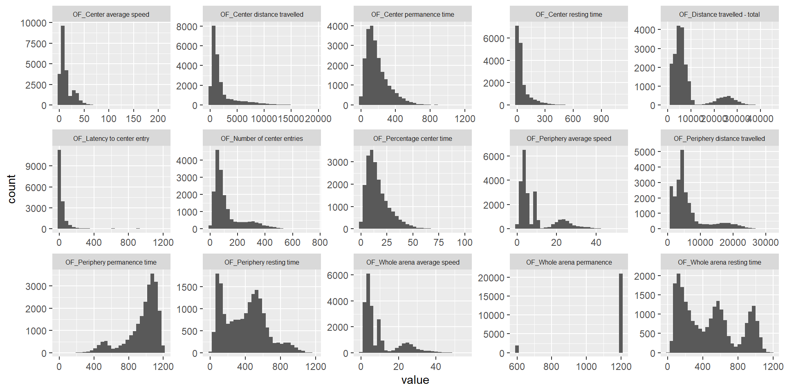
Rank Z transformation
library(RNOmni)
OF.mat.rank <- OF.mat
dim(OF.mat.rank)[1] 22857 18OF.mat.rank <- OF.mat.rank[complete.cases(OF.mat.rank),]
dim(OF.mat.rank)[1] 14863 18dim(OF.mat)[1] 22857 18OF.mat <- OF.mat[complete.cases(OF.mat),]
dim(OF.mat)[1] 14863 18OF.mat.rank <- cbind(OF.mat.rank[,1:3], apply(OF.mat.rank[,-1:-3], 2, RankNorm))
ggplot(melt(OF.mat.rank), aes(x=value)) +
geom_histogram() +
facet_wrap(~variable, scales="free", ncol=5)+
theme(strip.text.x = element_text(size = 6))
Principal Variance Component Analysis
Here we conducted a PVCA analysis on the phenotype matrix data and measure the proportion of variance explained by each important covariate (sex, phenotyping_center).
source("code/PVCA.R")
meta <- OF.mat.rank[,1:3] ## looking at covariates sex, phenotyping_center, and strain_name
head(meta) sex phenotyping_center strain_name
39638 female MRC Harwell C57BL/6NTac
39639 female HMGU C57BL/6NCrl
39640 female HMGU C57BL/6NTac
39641 male HMGU C57BL/6NCrl
39642 female MRC Harwell C57BL/6NTac
39643 female HMGU C57BL/6NCrldim(meta)[1] 14863 3summary(meta) # variables are still characters sex phenotyping_center strain_name
Length:14863 Length:14863 Length:14863
Class :character Class :character Class :character
Mode :character Mode :character Mode :character meta[sapply(meta, is.character)] <- lapply(meta[sapply(meta, is.character)], as.factor)
summary(meta) # now all variables are converted to factors sex phenotyping_center strain_name
female:7428 MRC Harwell:4532 C57BL/6N :3655
male :7435 HMGU :3119 C57BL/6NCrl:3510
ICS :2417 C57BL/6NJcl: 459
RBRC :1323 C57BL/6NTac:7239
CCP-IMG :1141
TCP :1093
(Other) :1238 chisq.test(meta[,1],meta[,2])
Pearson's Chi-squared test
data: meta[, 1] and meta[, 2]
X-squared = 3.7637, df = 7, p-value = 0.8066chisq.test(meta[,2],meta[,3])
Pearson's Chi-squared test
data: meta[, 2] and meta[, 3]
X-squared = 29526, df = 21, p-value < 2.2e-16meta<-meta[,-3] # phenotyping_center and strain_name strongly associated and this caused confouding in PVCA analysis so strain_name dropped.
G <- t(OF.mat.rank[,-1:-3]) ## phenotype matrix data
set.seed(09302021)
# Perform PVCA for 10 random samples of size 1000 (more computationally efficient)
pvca.res <- matrix(nrow=10, ncol=3)
for (i in 1:10){
sample <- sample(1:ncol(G), 1000, replace=FALSE)
pvca.res[i,] <- PVCA(G[,sample], meta[sample,], threshold=0.6, inter=FALSE)
}
# Average effect size across samples
pvca.means <- colMeans(pvca.res)
names(pvca.means) <- c(colnames(meta), "resid")
# Plot PVCA
pvca.plot <- PlotPVCA(pvca.means, "PVCA of Phenotype Matrix Data")
pvca.plot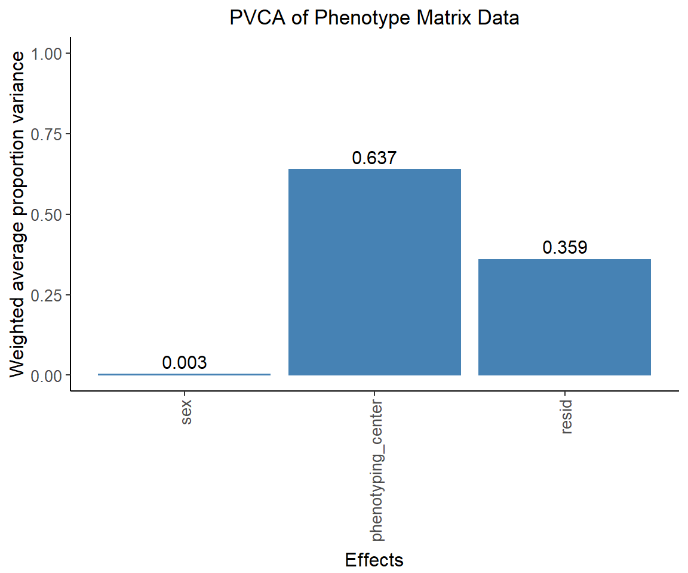
png(file="docs/figure/figures.Rmd/pvca_OF_1.png", width=600, height=350)
pvca.plot
dev.off()png
2 Removing batch effects using ComBat
We remove the center effect using ComBat.
library(sva)Loading required package: mgcvLoading required package: nlme
Attaching package: 'nlme'The following object is masked from 'package:lme4':
lmListThe following object is masked from 'package:dplyr':
collapseThis is mgcv 1.8-36. For overview type 'help("mgcv-package")'.Loading required package: genefilter
Attaching package: 'genefilter'The following object is masked from 'package:ComplexHeatmap':
dist2Loading required package: BiocParallelcombat_komp = ComBat(dat=G, batch=meta$phenotyping_center, par.prior=TRUE, prior.plots=TRUE, mod=NULL)Found 1 genes with uniform expression within a single batch (all zeros); these will not be adjusted for batch.Found8batchesAdjusting for0covariate(s) or covariate level(s)Standardizing Data across genesFitting L/S model and finding priorsFinding parametric adjustmentsAdjusting the Data
combat_komp[1:5,1:5] 39638 39639 39640 39641
OF_Center average speed 0.59446136 -0.1046728 0.12751142 0.2488662
OF_Center distance travelled 0.49851881 -0.3961273 0.26323301 -0.1860701
OF_Center permanence time 0.05536160 -0.5740468 0.28108074 -0.3840993
OF_Center resting time 0.09818595 -0.9419518 0.58940330 -0.4078182
OF_Distance travelled - total 0.03620577 -0.0705752 0.03808406 0.4042278
39642
OF_Center average speed -0.16244236
OF_Center distance travelled -0.98532415
OF_Center permanence time -0.81014937
OF_Center resting time 0.05024321
OF_Distance travelled - total -0.11281875G[1:5,1:5] # for comparison, combat_komp is same form and same dimensions as G 39638 39639 39640 39641
OF_Center average speed 0.425513501 1.234197021 1.5167530 1.6644355
OF_Center distance travelled 0.129374222 0.997641495 1.5808081 1.1834251
OF_Center permanence time -0.515972599 0.009697299 0.8574740 0.1980120
OF_Center resting time 0.001686461 -1.202492878 0.3483423 -0.6615647
OF_Distance travelled - total -0.470073474 1.298879853 1.4120914 1.7935746
39642
OF_Center average speed -0.44088826
OF_Center distance travelled -1.46426536
OF_Center permanence time -1.37773801
OF_Center resting time -0.04360882
OF_Distance travelled - total -0.61963422PVCA on residuals from ComBat
The center effect should be much lower.
set.seed(09302021)
# Perform PVCA for 10 samples (more computationally efficient)
pvca.res.nobatch <- matrix(nrow=10, ncol=3)
for (i in 1:10){
sample <- sample(1:ncol(combat_komp), 1000, replace=FALSE)
pvca.res.nobatch[i,] <- PVCA(combat_komp[,sample], meta[sample,], threshold=0.6, inter=FALSE)
}
# Average effect size across samples
pvca.means.nobatch <- colMeans(pvca.res.nobatch)
names(pvca.means.nobatch) <- c(colnames(meta), "resid")
# Plot PVCA
pvca.plot.nobatch <- PlotPVCA(pvca.means.nobatch, "PVCA of Phenotype Matrix Data with Reduced Batch Effect")
pvca.plot.nobatch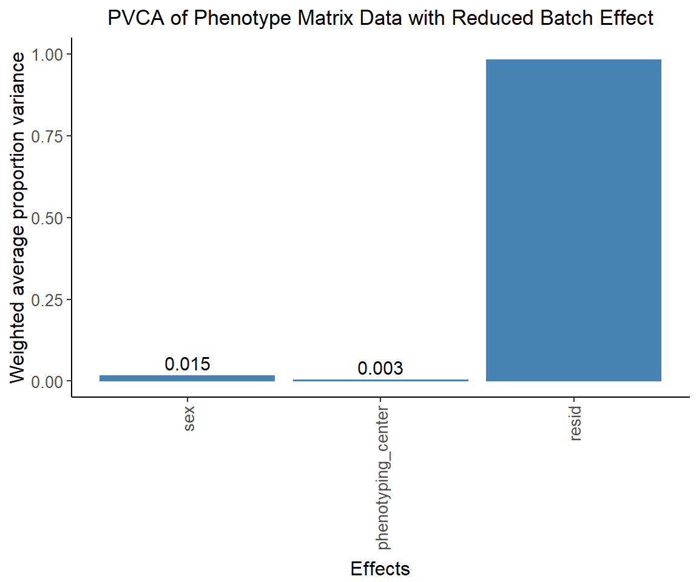
png(file="docs/figure/figures.Rmd/pvca_OF_2.png", width=600, height=350)
pvca.plot.nobatch
dev.off()png
2 Compute correlations between phenotypes
OF.cor.rank <- cor(OF.mat.rank[,-1:-3], use="pairwise.complete.obs") # pearson correlation coefficient
OF.cor <- cor(OF.mat[,-1:-3], use="pairwise.complete.obs", method="spearman") # spearman
OF.cor.combat <- cor(t(combat_komp), use="pairwise.complete.obs")
pheno.list <- rownames(OF.cor)
ht1 = Heatmap(OF.cor, show_column_names = F, row_names_gp = gpar(fontsize = 9), name="Spearm. Corr.")
draw(ht1)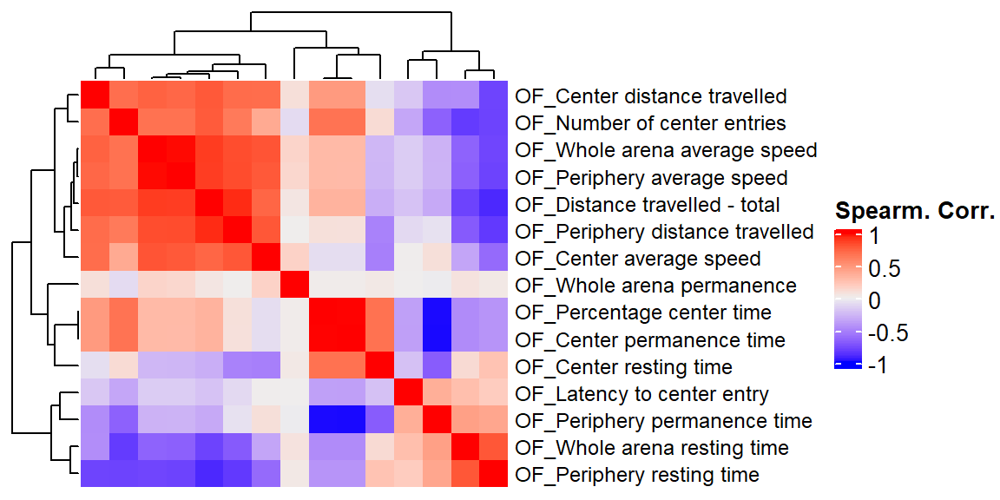
ht2 = Heatmap(OF.cor.rank, show_column_names = F, row_names_gp = gpar(fontsize = 9), name="Corr. RankZ")
draw(ht2)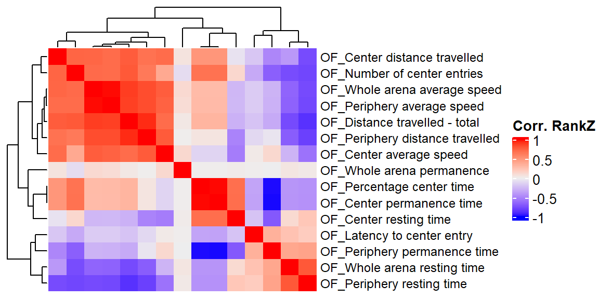
ht3 = Heatmap(OF.cor.combat, show_column_names = F, row_names_gp = gpar(fontsize = 9), name="Corr. ComBat")
draw(ht3)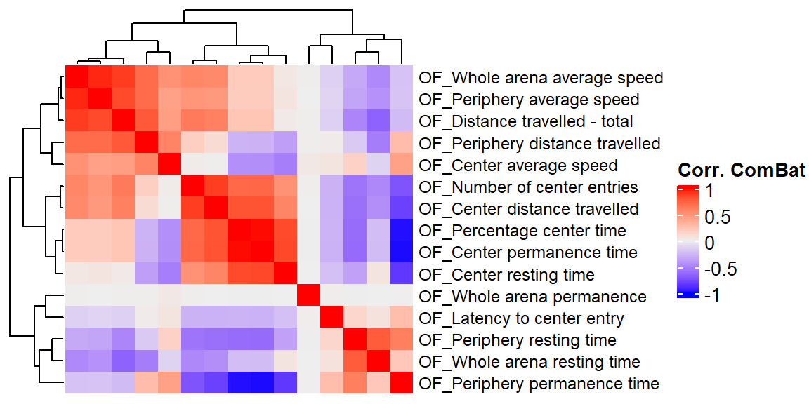
Prep IMPC summary stat
Read OF summary stat (IMPCv10.1)
OF.stat <- readRDS("data/OF.stat.v16.rds")
dim(OF.stat)[1] 61854 8table(OF.stat$parameter_name, OF.stat$procedure_name)
OF
Center average speed 3896
Center distance travelled 4176
Center permanence time 4275
Center resting time 3570
Distance travelled - total 4201
Latency to center entry 2989
Number of center entries 3614
Number of rears - total 2553
Percentage center movement time 3600
Percentage center time 4275
Periphery average speed 4176
Periphery distance travelled 4176
Periphery permanence time 4275
Periphery resting time 3529
Whole arena average speed 4275
Whole arena resting time 4274length(unique(OF.stat$marker_symbol)) #3362[1] 3823length(unique(OF.stat$allele_symbol)) #3412[1] 3868length(unique(OF.stat$proc_param_name)) #15 # number of phenotypes in association statistics data set[1] 16length(unique(OF.data$proc_param_name)) #15 # number of phenotypes in final control data[1] 15pheno.list.stat <- unique(OF.stat$proc_param_name)
pheno.list.ctrl <- unique(OF.data$proc_param_name)
sum(pheno.list.stat %in% pheno.list.ctrl)[1] 14sum(pheno.list.ctrl %in% pheno.list.stat)[1] 14## extract common phenotype list
common.pheno.list <- sort(intersect(pheno.list.ctrl, pheno.list.stat))
common.pheno.list [1] "OF_Center average speed" "OF_Center distance travelled"
[3] "OF_Center permanence time" "OF_Center resting time"
[5] "OF_Distance travelled - total" "OF_Latency to center entry"
[7] "OF_Number of center entries" "OF_Percentage center time"
[9] "OF_Periphery average speed" "OF_Periphery distance travelled"
[11] "OF_Periphery permanence time" "OF_Periphery resting time"
[13] "OF_Whole arena average speed" "OF_Whole arena resting time" length(common.pheno.list) # 14 - each data set had one phenotype not present in the other[1] 14## Use summary statistics of common phenotypes
dim(OF.stat)[1] 61854 8OF.stat <- OF.stat %>% filter(proc_param_name %in% common.pheno.list)
dim(OF.stat)[1] 55701 8length(unique(OF.stat$proc_param_name))[1] 14Duplicates in gene-phenotype pair
mtest <- table(OF.stat$proc_param_name, OF.stat$marker_symbol)
mtest <-as.data.frame.matrix(mtest)
nmax <-max(mtest)
col_fun = colorRamp2(c(0, nmax), c("white", "red"))
col_fun(seq(0, nmax)) [1] "#FFFFFFFF" "#FFEAE2FF" "#FFD5C6FF" "#FFBFAAFF" "#FFA98FFF" "#FF9374FF"
[7] "#FF7B5AFF" "#FF6140FF" "#FF4124FF" "#FF0000FF"ht = Heatmap(as.matrix(mtest), cluster_rows = FALSE, cluster_columns = FALSE, show_column_names = F, col = col_fun,
row_names_gp = gpar(fontsize = 8), name="Count")`use_raster` is automatically set to TRUE for a matrix with more than
2000 columns You can control `use_raster` argument by explicitly
setting TRUE/FALSE to it.
Set `ht_opt$message = FALSE` to turn off this message.'magick' package is suggested to install to give better rasterization.
Set `ht_opt$message = FALSE` to turn off this message.draw(ht)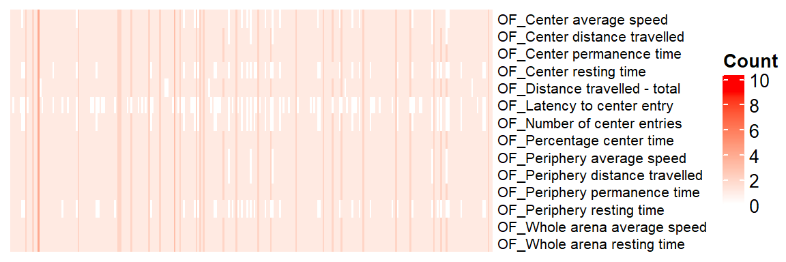
Using Stouffer’s method, merge multiple z-scores of a gene-phenotype pair into a z-score
## sum(z-score)/sqrt(# of zscore)
sumz <- function(z){ sum(z)/sqrt(length(z)) }
OF.z = OF.stat %>%
dplyr::select(marker_symbol, proc_param_name, z_score) %>%
na.omit() %>%
group_by(marker_symbol, proc_param_name) %>%
summarize(zscore = sumz(z_score)) ## combine z-scores`summarise()` has grouped output by 'marker_symbol'. You can override using the `.groups` argument.dim(OF.z)[1] 49921 3Make z-score matrix (long to wide)
nan2na <- function(df){
out <- data.frame(sapply(df, function(x) ifelse(is.nan(x), NA, x)))
colnames(out) <- colnames(df)
out
}
OF.zmat = dcast(OF.z, marker_symbol ~ proc_param_name, value.var = "zscore",
fun.aggregate = mean) %>% tibble::column_to_rownames(var="marker_symbol")
OF.zmat = nan2na(OF.zmat) #convert nan to na
dim(OF.zmat)[1] 3823 14dim(OF.zmat)[1] 3823 14saveRDS(OF.zmat, file = "data/OF.zmat.rds")
id.mat <- 1*(!is.na(OF.zmat)) # multiply 1 to make this matrix numeric
nrow(as.data.frame(colSums(id.mat)))[1] 14dim(id.mat)[1] 3823 14## heatmap of gene - phenotype (red: tested, white: untested)
ht = Heatmap(t(id.mat),
cluster_rows = T, clustering_distance_rows ="binary",
cluster_columns = T, clustering_distance_columns = "binary",
show_row_dend = F, show_column_dend = F, # do not show dendrogram
show_column_names = F, col = c("white","red"),
row_names_gp = gpar(fontsize = 10), name="Missing")`use_raster` is automatically set to TRUE for a matrix with more than
2000 columns You can control `use_raster` argument by explicitly
setting TRUE/FALSE to it.
Set `ht_opt$message = FALSE` to turn off this message.'magick' package is suggested to install to give better rasterization.
Set `ht_opt$message = FALSE` to turn off this message.draw(ht)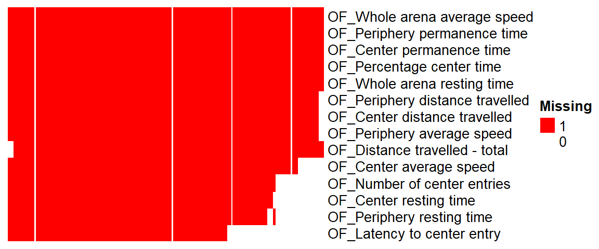
Z-score Distribution
We plot association Z-score distribution for each phenotype.
ggplot(melt(OF.zmat), aes(x=value)) +
geom_histogram() +
facet_wrap(~variable, scales="free", ncol=5)+
theme(strip.text.x = element_text(size = 6))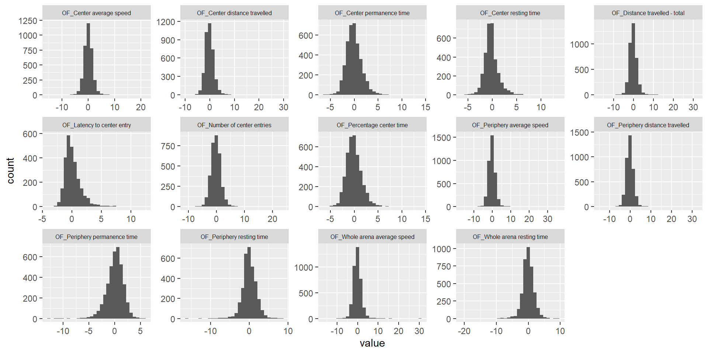
Estimate genetic correlation matrix between phenotypes using Zscores
Here, we estimate the genetic correlations between phenotypes using association Z-score matrix (num of genes:3983, num of phenotypes 19).
OF.zmat <- OF.zmat[,common.pheno.list]
OF.zcor = cor(OF.zmat, use="pairwise.complete.obs")
ht = Heatmap(OF.zcor, cluster_rows = T, cluster_columns = T, show_column_names = F, #col = col_fun,
row_names_gp = gpar(fontsize = 10),
name="Genetic Corr (Z-score)"
)
draw(ht)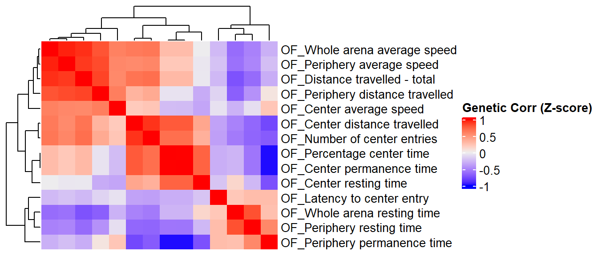
Phenotype Corr VS Genetic Corr btw phenotypes
We compare a correlation matrix obtained using control mice phenotype data v.s. a genetic correlation matrix estimated using association Z-scores. As you can see, both correlation heatmaps have similar correlation pattern.
OF.cor.rank.fig <- OF.cor.rank[common.pheno.list,common.pheno.list]
OF.cor.fig <- OF.cor[common.pheno.list,common.pheno.list]
OF.cor.combat.fig <- OF.cor.combat[common.pheno.list, common.pheno.list]
OF.zcor.fig <- OF.zcor
ht = Heatmap(OF.cor.rank.fig, cluster_rows = TRUE, cluster_columns = TRUE, show_column_names = F, #col = col_fun,
show_row_dend = F, show_column_dend = F, # do not show dendrogram
row_names_gp = gpar(fontsize = 8), column_title="Phenotype Corr (RankZ, Pearson)", column_title_gp = gpar(fontsize = 8),
name="Corr")
pheno.order <- row_order(ht)Warning: The heatmap has not been initialized. You might have different results
if you repeatedly execute this function, e.g. when row_km/column_km was
set. It is more suggested to do as `ht = draw(ht); row_order(ht)`.#draw(ht)
OF.cor.rank.fig <- OF.cor.rank.fig[pheno.order,pheno.order]
ht1 = Heatmap(OF.cor.rank.fig, cluster_rows = FALSE, cluster_columns = FALSE, show_column_names = F, #col = col_fun,
show_row_dend = F, show_column_dend = F, # do not show dendrogram
row_names_gp = gpar(fontsize = 8), column_title="Phenotype Corr (RankZ, Pearson)", column_title_gp = gpar(fontsize = 8),
name="Corr")
OF.cor.fig <- OF.cor.fig[pheno.order,pheno.order]
ht2 = Heatmap(OF.cor.fig, cluster_rows = FALSE, cluster_columns = FALSE, show_column_names = F, #col = col_fun,
row_names_gp = gpar(fontsize = 8), column_title="Phenotype Corr (Spearman)", column_title_gp = gpar(fontsize = 8),
name="Corr")
OF.cor.combat.fig <- OF.cor.combat.fig[pheno.order,pheno.order]
ht3 = Heatmap(OF.cor.combat.fig, cluster_rows = FALSE, cluster_columns = FALSE, show_column_names = F, #col = col_fun,
row_names_gp = gpar(fontsize = 8), column_title="Phenotype Corr (Combat, Pearson)", column_title_gp = gpar(fontsize = 8),
name="Corr")
OF.zcor.fig <- OF.zcor.fig[pheno.order,pheno.order]
ht4 = Heatmap(OF.zcor.fig, cluster_rows = FALSE, cluster_columns = FALSE, show_column_names = F, #col = col_fun,
row_names_gp = gpar(fontsize = 8), column_title="Genetic Corr (Pearson)", column_title_gp = gpar(fontsize = 8),
name="Corr"
)
draw(ht1+ht2+ht3+ht4)Warning: Heatmap/annotation names are duplicated: CorrWarning: Heatmap/annotation names are duplicated: Corr, CorrWarning: Heatmap/annotation names are duplicated: Corr, Corr, Corr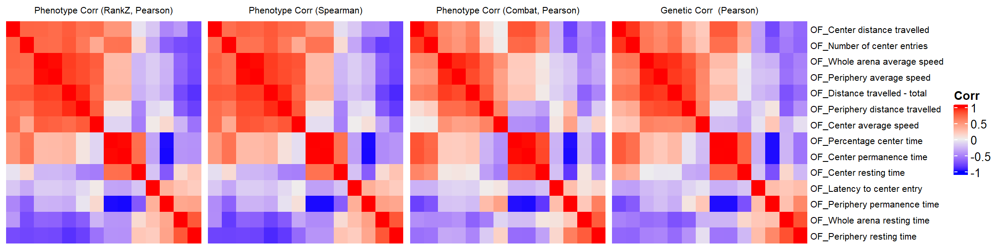
png(file="docs/figure/figures.Rmd/cors_OF.png", width=800, height=250)
draw(ht1+ht2+ht3+ht4)Warning: Heatmap/annotation names are duplicated: CorrWarning: Heatmap/annotation names are duplicated: Corr, CorrWarning: Heatmap/annotation names are duplicated: Corr, Corr, Corrdev.off()png
2 Test of the correlation between genetic correlation matrices
We use the Mantel’s test for testing the correlation between two distance matrices.
####################
# Use Mantel test
# https://stats.idre.ucla.edu/r/faq/how-can-i-perform-a-mantel-test-in-r/
# install.packages("ade4")
library(ade4)
to.upper<-function(X) X[upper.tri(X,diag=FALSE)]
a1 <- to.upper(OF.cor.fig)
a2 <- to.upper(OF.cor.rank.fig)
a3 <- to.upper(OF.cor.combat.fig)
a4 <- to.upper(OF.zcor.fig)
plot(a4, a1)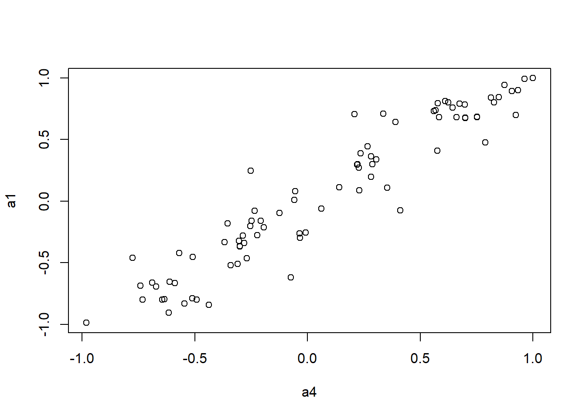
plot(a4, a2)plot(a4, a3)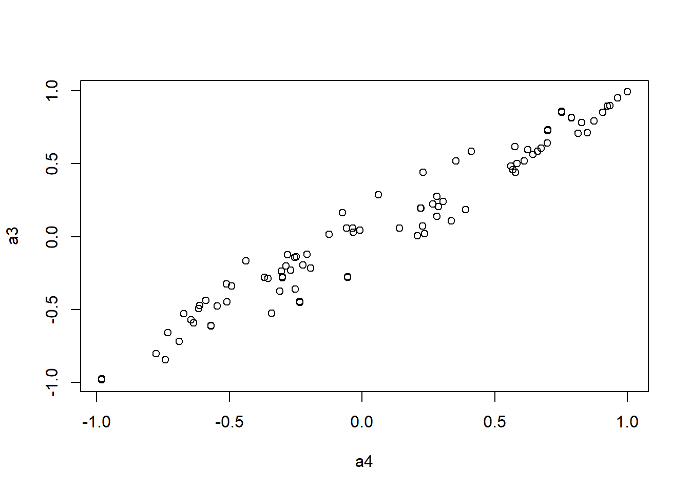
mantel.rtest(as.dist(1-OF.cor.fig), as.dist(1-OF.zcor.fig), nrepet = 9999) #nrepet = number of permutationsMonte-Carlo test
Call: mantelnoneuclid(m1 = m1, m2 = m2, nrepet = nrepet)
Observation: 0.9481883
Based on 9999 replicates
Simulated p-value: 1e-04
Alternative hypothesis: greater
Std.Obs Expectation Variance
8.2821799635 -0.0003203414 0.0131157538 mantel.rtest(as.dist(1-OF.cor.rank.fig), as.dist(1-OF.zcor.fig), nrepet = 9999)Monte-Carlo test
Call: mantelnoneuclid(m1 = m1, m2 = m2, nrepet = nrepet)
Observation: 0.9544471
Based on 9999 replicates
Simulated p-value: 1e-04
Alternative hypothesis: greater
Std.Obs Expectation Variance
8.2504397969 0.0008944113 0.0133578074 mantel.rtest(as.dist(1-OF.cor.combat.fig), as.dist(1-OF.zcor.fig), nrepet = 9999)Monte-Carlo test
Call: mantelnoneuclid(m1 = m1, m2 = m2, nrepet = nrepet)
Observation: 0.9759421
Based on 9999 replicates
Simulated p-value: 1e-04
Alternative hypothesis: greater
Std.Obs Expectation Variance
8.920438043 -0.001681222 0.012010766 Test KOMPUTE imputation algorithm
Load KOMPUTE package
if(!"kompute" %in% rownames(installed.packages())){
library(devtools)
devtools::install_github("dleelab/kompute")
}
library(kompute)Simulation study - imputed vs measured
We randomly select measured gene-phenotype association z-scores, mask those, impute them using KOMPUTE method. Then we compare the imputed z-scores to the measured ones.
zmat <-t(OF.zmat)
dim(zmat)[1] 14 3823## filter genes with na < 10
zmat0 <- is.na(zmat)
num.na<-colSums(zmat0)
summary(num.na) Min. 1st Qu. Median Mean 3rd Qu. Max.
0.0000 0.0000 0.0000 0.9419 1.0000 8.0000 zmat <- zmat[,num.na<10]
dim(zmat)[1] 14 3823#pheno.cor <- OF.cor.fig
#pheno.cor <- OF.cor.rank.fig
pheno.cor <- OF.cor.combat.fig
#pheno.cor <- OF.zcor.fig
zmat <- zmat[rownames(pheno.cor),,drop=FALSE]
rownames(zmat) [1] "OF_Center distance travelled" "OF_Number of center entries"
[3] "OF_Whole arena average speed" "OF_Periphery average speed"
[5] "OF_Distance travelled - total" "OF_Periphery distance travelled"
[7] "OF_Center average speed" "OF_Percentage center time"
[9] "OF_Center permanence time" "OF_Center resting time"
[11] "OF_Latency to center entry" "OF_Periphery permanence time"
[13] "OF_Whole arena resting time" "OF_Periphery resting time" rownames(pheno.cor) [1] "OF_Center distance travelled" "OF_Number of center entries"
[3] "OF_Whole arena average speed" "OF_Periphery average speed"
[5] "OF_Distance travelled - total" "OF_Periphery distance travelled"
[7] "OF_Center average speed" "OF_Percentage center time"
[9] "OF_Center permanence time" "OF_Center resting time"
[11] "OF_Latency to center entry" "OF_Periphery permanence time"
[13] "OF_Whole arena resting time" "OF_Periphery resting time" colnames(pheno.cor) [1] "OF_Center distance travelled" "OF_Number of center entries"
[3] "OF_Whole arena average speed" "OF_Periphery average speed"
[5] "OF_Distance travelled - total" "OF_Periphery distance travelled"
[7] "OF_Center average speed" "OF_Percentage center time"
[9] "OF_Center permanence time" "OF_Center resting time"
[11] "OF_Latency to center entry" "OF_Periphery permanence time"
[13] "OF_Whole arena resting time" "OF_Periphery resting time" npheno <- nrow(zmat)
## percentage of missing Z-scores in the original data
100*sum(is.na(zmat))/(nrow(zmat)*ncol(zmat)) # 21%[1] 6.728074nimp <- 2000 # # of missing/imputed Z-scores
set.seed(1111)
## find index of all measured zscores
all.i <- 1:(nrow(zmat)*ncol(zmat))
measured <- as.vector(!is.na(as.matrix(zmat)))
measured.i <- all.i[measured]
## mask 2000 measured z-scores
mask.i <- sort(sample(measured.i, nimp))
org.z = as.matrix(zmat)[mask.i]
zvec <- as.vector(as.matrix(zmat))
zvec[mask.i] <- NA
zmat.imp <- matrix(zvec, nrow=npheno)
rownames(zmat.imp) <- rownames(zmat)Run KOMPUTE method
kompute.res <- kompute(zmat.imp, pheno.cor, 0.01)
KOMPute running...# of genes: 3823# of phenotypes: 14# of imputed Z-scores: 5601# measured vs imputed
length(org.z)[1] 2000imp.z <- as.matrix(kompute.res$zmat)[mask.i]
imp.info <- as.matrix(kompute.res$infomat)[mask.i]
plot(imp.z, org.z)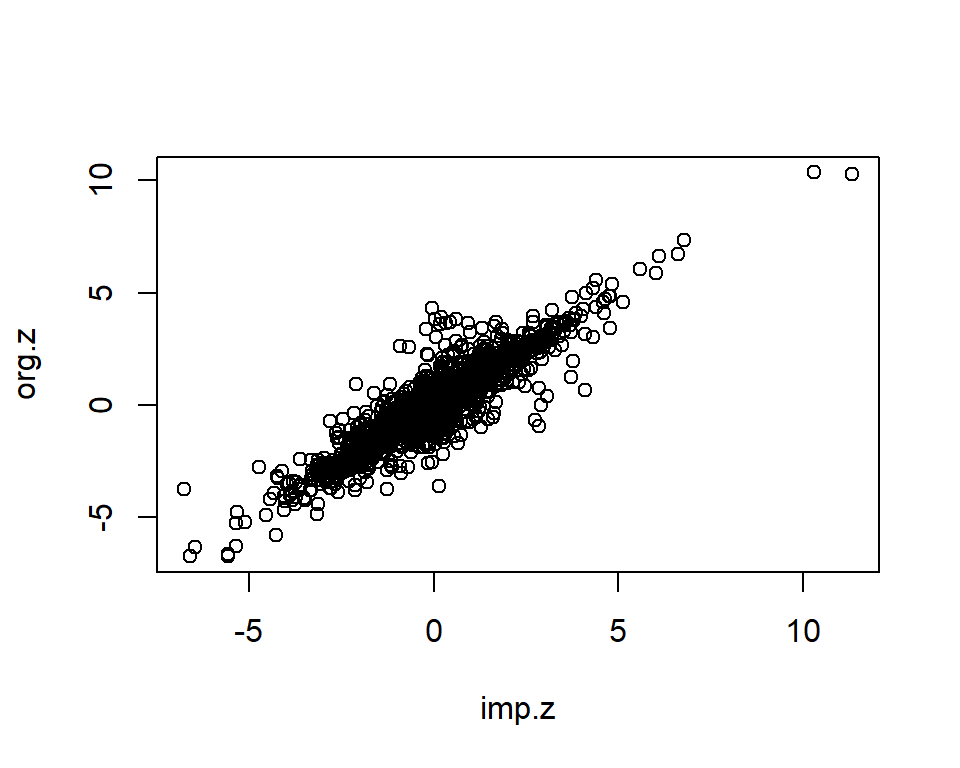
imp <- data.frame(org.z=org.z, imp.z=imp.z, info=imp.info)
dim(imp)[1] 2000 3imp <- imp[complete.cases(imp),]
imp <- subset(imp, info>=0 & info <= 1)
dim(imp)[1] 2000 3cor.val <- round(cor(imp$imp.z, imp$org.z), digits=3)
cor.val[1] 0.917plot(imp$imp.z, imp$org.z)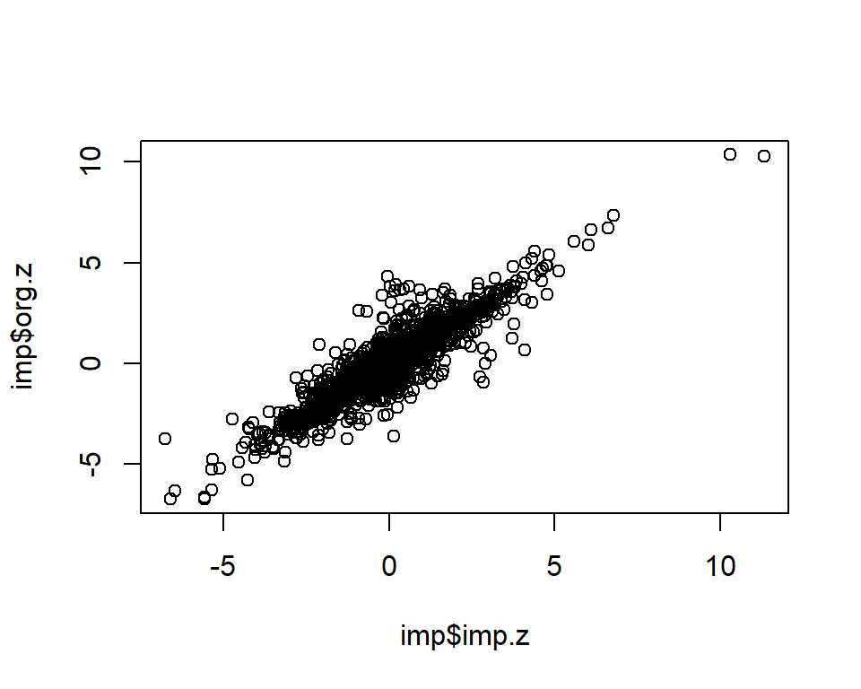
info.cutoff <- 0.8
imp.sub <- subset(imp, info>info.cutoff)
dim(imp.sub)[1] 1692 3summary(imp.sub$imp.z) Min. 1st Qu. Median Mean 3rd Qu. Max.
-6.7589 -1.1702 -0.1815 -0.1054 0.8437 11.3203 summary(imp.sub$info) Min. 1st Qu. Median Mean 3rd Qu. Max.
0.8039 0.8564 0.9281 0.9146 0.9649 0.9878 cor.val <- round(cor(imp.sub$imp.z, imp.sub$org.z), digits=3)
cor.val[1] 0.948g <- ggplot(imp.sub, aes(x=imp.z, y=org.z, col=info)) +
geom_point() +
labs(title=paste0("IMPC Behavior Data (OF), Info>", info.cutoff, ", Cor=",cor.val),
x="Imputed Z-scores", y = "Measured Z-scores", col="Info") +
theme_minimal()
g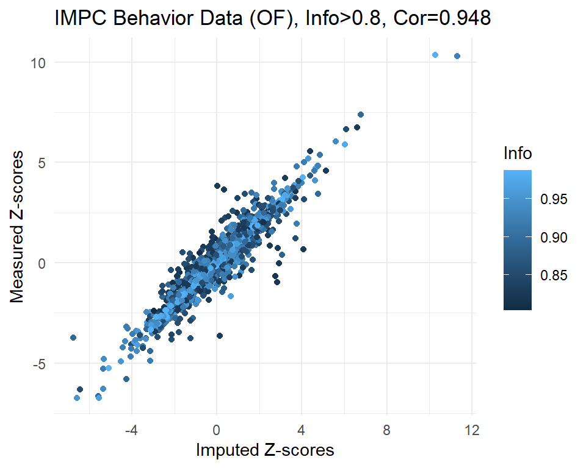
# save plot
png(file="docs/figure/figures.Rmd/sim_results_OF.png", width=600, height=350)
g
dev.off()png
2 # Part of Supplementary Figure 3
fig3.3 <- ggplot(imp.sub, aes(x=imp.z, y=org.z, col=info)) +
geom_point() +
labs(title="Open Field",
x="Imputed Z-scores", y = "", col="Info") +
scale_x_continuous(limits=c(-9,9), breaks=c(seq(-9,9,3)), minor_breaks = NULL) +
scale_y_continuous(limits=c(-9,9), breaks=c(seq(-9,9,3))) +
scale_color_gradient(limits=c(0.8,1), low="#98cdf9", high="#084b82") +
theme_bw() +
theme(legend.position="none", plot.title=element_text(hjust=0.5))
save(fig3.3, file="docs/figure/figures.Rmd/sim_OF.rdata")
sessionInfo()R version 4.1.1 (2021-08-10)
Platform: x86_64-w64-mingw32/x64 (64-bit)
Running under: Windows 10 x64 (build 19044)
Matrix products: default
locale:
[1] LC_COLLATE=English_United States.1252
[2] LC_CTYPE=English_United States.1252
[3] LC_MONETARY=English_United States.1252
[4] LC_NUMERIC=C
[5] LC_TIME=English_United States.1252
attached base packages:
[1] grid stats graphics grDevices utils datasets methods
[8] base
other attached packages:
[1] kompute_0.1.0 ade4_1.7-18 sva_3.42.0
[4] BiocParallel_1.28.0 genefilter_1.76.0 mgcv_1.8-36
[7] nlme_3.1-152 lme4_1.1-27.1 Matrix_1.3-4
[10] RNOmni_1.0.0 ComplexHeatmap_2.10.0 circlize_0.4.13
[13] RColorBrewer_1.1-2 tidyr_1.1.4 ggplot2_3.3.5
[16] reshape2_1.4.4 dplyr_1.0.7 data.table_1.14.2
loaded via a namespace (and not attached):
[1] bitops_1.0-7 matrixStats_0.61.0 fs_1.5.0
[4] bit64_4.0.5 doParallel_1.0.16 httr_1.4.2
[7] GenomeInfoDb_1.30.0 rprojroot_2.0.2 tools_4.1.1
[10] bslib_0.3.1 utf8_1.2.2 R6_2.5.1
[13] DBI_1.1.1 BiocGenerics_0.40.0 colorspace_2.0-2
[16] GetoptLong_1.0.5 withr_2.4.2 tidyselect_1.1.1
[19] bit_4.0.4 compiler_4.1.1 git2r_0.28.0
[22] Biobase_2.54.0 labeling_0.4.2 sass_0.4.1
[25] scales_1.1.1 stringr_1.4.0 digest_0.6.28
[28] minqa_1.2.4 rmarkdown_2.14 XVector_0.34.0
[31] pkgconfig_2.0.3 htmltools_0.5.2 limma_3.50.0
[34] fastmap_1.1.0 highr_0.9 rlang_0.4.12
[37] GlobalOptions_0.1.2 RSQLite_2.2.8 shape_1.4.6
[40] jquerylib_0.1.4 farver_2.1.0 generics_0.1.1
[43] jsonlite_1.7.2 RCurl_1.98-1.5 magrittr_2.0.1
[46] GenomeInfoDbData_1.2.7 Rcpp_1.0.7 munsell_0.5.0
[49] S4Vectors_0.32.0 fansi_0.5.0 lifecycle_1.0.1
[52] edgeR_3.36.0 stringi_1.7.5 whisker_0.4
[55] yaml_2.2.1 zlibbioc_1.40.0 MASS_7.3-57
[58] plyr_1.8.6 blob_1.2.2 parallel_4.1.1
[61] promises_1.2.0.1 crayon_1.4.1 lattice_0.20-44
[64] Biostrings_2.62.0 splines_4.1.1 annotate_1.72.0
[67] KEGGREST_1.34.0 locfit_1.5-9.4 knitr_1.36
[70] pillar_1.6.4 boot_1.3-28 rjson_0.2.20
[73] codetools_0.2-18 stats4_4.1.1 XML_3.99-0.8
[76] glue_1.4.2 evaluate_0.14 png_0.1-7
[79] vctrs_0.3.8 nloptr_1.2.2.2 httpuv_1.6.3
[82] foreach_1.5.1 gtable_0.3.0 purrr_0.3.4
[85] clue_0.3-60 assertthat_0.2.1 cachem_1.0.6
[88] xfun_0.31 xtable_1.8-4 later_1.3.0
[91] survival_3.2-11 tibble_3.1.5 iterators_1.0.13
[94] memoise_2.0.0 AnnotationDbi_1.56.0 IRanges_2.28.0
[97] workflowr_1.6.2 cluster_2.1.2 ellipsis_0.3.2